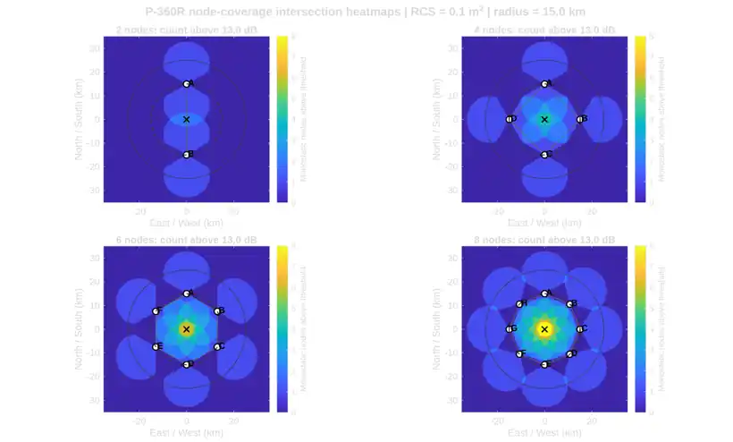

Networked airborne support
PACN-01 is intended to support resilient communications, operator awareness, mission-level decision support, and distributed sensing or track-sharing workflows.

PACN-01
PACN-01 is Peregrine's airborne architecture for communications, mission compute, track services, and distributed sensing workflows.
Program snapshot
Public descriptions here are representative only and avoid sensitive implementation details.
PACN-01 is intended to support resilient communications, operator awareness, mission-level decision support, and distributed sensing or track-sharing workflows.
The architecture is structured to host compute, RF modules, software services, and mission-specific payload functions without locking Peregrine to a single narrow mission set.
PACN-01 is in design and maturation. Hardware integration, airframe pairing, and prototype execution remain active next steps.
FOVEA Engine and Peregrine Mission Console provide the software path for scenario building, simulation, decision logic, tracking, cooperative fusion, and operator workflows.
FOVEA and PMC
Current public status reflects an engineering MVP, not a fielded or flight-qualified product.
Mission console
The current Peregrine Mission Console provides a desktop engineering environment for FOVEA scenario construction, tracking, replay, cooperative fusion, and mission-level decision review.

Representative analysis
Peregrine uses analysis and simulation to shape architecture decisions before committing to expensive hardware paths.


Coverage and geometry studies help bound where multi-node architectures provide the best operational value.
Platform altitude, geometry, and environment assumptions are evaluated early to guide payload and concept decisions.
Modeling and software validation provide an affordable path to refine the concept before full prototype integration.